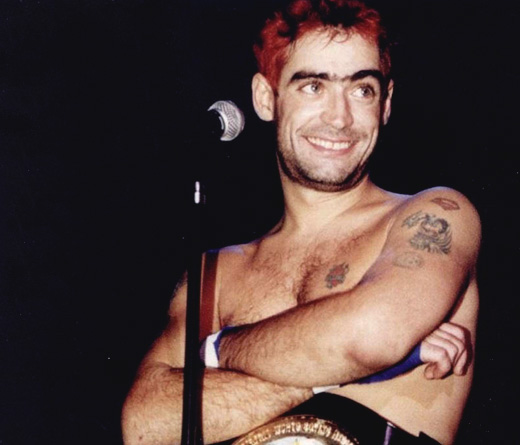
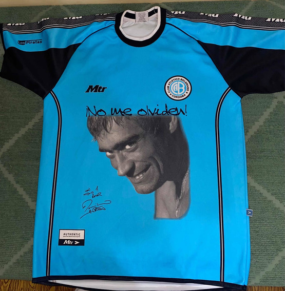
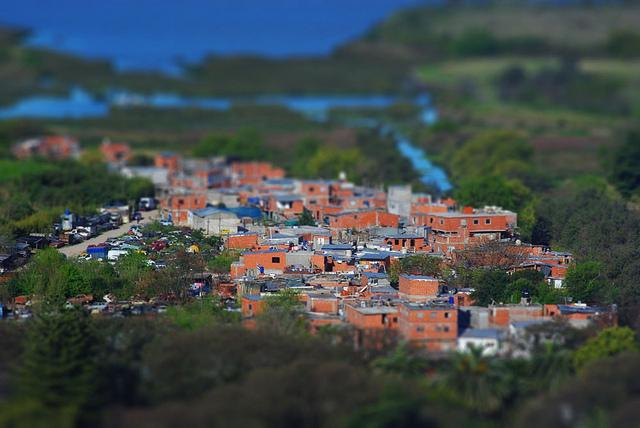
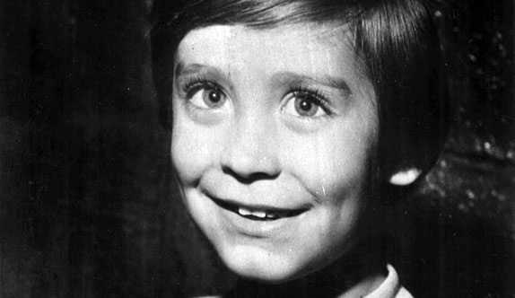
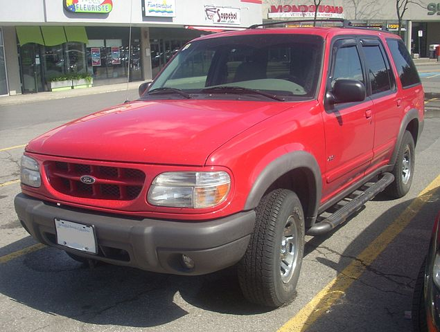

Rodrigo en uno de los recitales en el Luna Park
Sobre él
Rodrigo Alejandro Bueno (Córdoba, 24 de mayo de 1973 - Berazategui, 24 de junio de 2000), conocido como "El Potro Rodrigo", fue un cantante argentino de cuarteto. El estilo de Rodrigo estuvo marcado por su carisma y su energía en el escenario. Su pelo corto y teñido y ropa casual diferían de cantantes típicos de cuarteto con colores estridentes y el pelo largo rizado. Durante su carrera, Rodrigo amplió la música cuarteto a la escena nacional argentina, siendo una de las mayores y principales figuras del género.
Canciones más populares
Ocho Cuarenta
Lo Mejor del Amor
Yerba Mala
Soy Córdobes
Y Voló Voló
La Mano de Dios
Amor Clasificado
Que Ironía
El Divorcio
Amor de 7° Grado
Legado
Rodrigo expandió el cuarteto -género musical típico de la provincia de Córdoba- a nivel nacional. Poco después de su muerte en el Kilómetro 27 de la Autopista Buenos Aires-La Plata, sus aficionados construyeron un santuario que incluyó una estatua del cantante. Un año después, una multitud de 15 000 personas se reunió en el memorial para recordarlo.
En 1999, introdujo al cantante de cuarteto Walter Olmos a la escena pública con actuaciones en varios de sus conciertos en la provincia de Buenos Aires. Después de la muerte de Bueno, Olmos fue popularmente considerado como su heredero musical, pero solo disfrutó de breve éxito antes de su muerte.
El 12 de abril de 2001, se estrenó un largometraje basado en su vida llamado Rodrigo, la película en 136 cines argentinos. La película muestra una historia de una chica adolescente que idolatraba al cantante en donde aparecen canciones de fondo y conciertos realizados por "El Potro". La película no tuvo el éxito esperado y fue considerada por algunos como un intento para obtener beneficios a costa de la memoria del cantante.

Camiseta de la temporada 2002-03 del Club Belgrano de Córdoba en homenaje a Rodrigo, hincha del club.
Bueno, un reconocido hincha del Club Atlético Belgrano, sigue siendo considerado como una figura importante dentro de la afición del club, la cuál, en forma de homenaje, estampó el rostro de Rodrigo en su camiseta durante la temporada 2002-03 de la Primera División de Argentina, además el ex-arquero titular de Belgrano es su primo Juan Carlos Olave, que tiene en su uniforme una imagen de él. En 2012, la administración del club decidió recaudar fondos para construir una estatua de bronce del cantante en las afueras del estadio Gigante de Alberdi.
En el año 2005, con motivo de la emisión del último programa del ciclo La noche del 10, conducido por Diego Armando Maradona y emitido en esta ocasión desde el Luna Park, los cantantes Andrés Ciro Martínez y Juanse, junto a los grupos Los Piojos y Bersuit Vergarabat, entonaron las estrofas del tema "La mano de Dios". Estos músicos, que en su momento también dedicaron canciones a Maradona, decidieron unirse para ejecutar este tema, como homenaje a El Diez, justamente en el mismo escenario que consolidó definitivamente la carrera de Rodrigo. El escenario se complementó con un grupo de pantallas gigantes que emitieron imágenes de los recitales del cantante cordobés. Al finalizar el recital, y tras los agradecimientos de parte de Maradona, Gustavo Cordera concluyó diciendo: «A Rodrigo, que está en el cielo y que hizo la canción más hermosa y que jamás se hubiera escuchado». Ese mismo año recibió post-mortem por parte de la Fundación Konex un diploma al mérito por su trayectoria como cantante de cuarteto.
En 2010, en el décimo aniversario de su muerte, la Cámara de Diputados de Buenos Aires lo declaró como personalidad destacada de la cultura popular en la provincia. Un concierto homenaje se realizó el 16 de enero de 2013 durante la inauguración de la primera edición del Carnaval Cuartetero. Durante las celebraciones del Día del Canillita, el Gobernador de Córdoba, José Manuel de la Sota, anunció planes para construir una estatua en honor a Bueno, que fue finalmente colocada en el «Paseo del Buen Pastor» unas horas antes del comienzo del Carnaval cuartetero.

Vista aérea de la Villa Rodrigo Bueno
Una villa miseria cercana a la Reserva ecológica de Buenos Aires fue nombrada como "Villa Rodrigo Bueno" tras su muerte.
En noviembre de 2017 se confirmó el estreno de El Potro, una película biográfica del cantante. Dicha película se estrenó el 4 de octubre de 2018 y está protagonizada por Rodrigo Romero y fue dirigida por Lorena Muñoz. Se rodó en Córdoba y Buenos aires.
Biografía completa
Primeros años y comienzos en la música

Rodrigo Bueno cuando era niño
Rodrigo nació el 24 de mayo de 1973, en Córdoba Capital, siendo el primogénito del matrimonio entre Eduardo "Pichín" Bueno y Beatriz Olave. Bueno tenía dos hermanos, Flavio y Ulises; siendo este último otro exitoso cantante. La primera aparición de Rodrigo en público fue a los dos años de edad, en un programa de televisión denominado Fiesta del Cuarteto, en el que fue subido al escenario por Carlitos "La Mona" Jiménez. Desde pequeño Rodrigo jugaba a ser un cantante y sentía pasión por el micrófono. Era amante del cuarteto e iba muy seguido a bailes, donde era invitado al escenario a cantar. De chico acudió a una escuela de folclore, y cantaba rock en una pequeña banda que tenía.
Al crecer, Bueno trabajó como repartidor de periódicos en el quiosco de su abuela Hortensia. En 1984, asistió a conciertos de la banda local Chébere y fue invitado, en ocasiones, a unirse a ellos en el escenario. Al año siguiente, abandonó la primaria que realizó en el Instituto La Salle de Córdoba Capital y comenzó a trabajar en la tienda de discos de su padre. Un amigo de su padre que pertenecía a la banda local Manto Negro le ofreció a Rodrigo formar parte de la agrupación. Fue entonces cuando empezó formalmente su carrera en la industria musical, firmó su primer contrato y ganó su primer sueldo como músico a los trece años. Aunque había escrito canciones desde los diez años, nunca las dio a conocer a sus amigos debido a sus faltas ortográficas.
Convirtiéndose en solista y elevación a la fama
Como Rodrigo no pudo alcanzar el éxito en Córdoba, su padre y representante Eduardo decidió lanzar la carrera de Rodrigo como solista en Buenos Aires. En 1987, publicó su primer álbum, titulado "La foto de tu cuerpo", a través de PolyGram Records. Un año después, publicó su segundo álbum, llamado "Aprendiendo a vivir", y con el lanzamiento de dicho álbum viajó a la ciudad de Buenos Aires para consolidar su carrera artística. El álbum fue presentado en la discoteca Fantástico Bailable, donde un año más tarde presentó su tercer trabajo, "Completamente enamorado". Ese año grabó un nuevo álbum, titulado "Made in Argentina", que incluyó "Bella María de mi alma". Para ese entonces, la carrera de Rodrigo seguía creciendo. Ese mismo año, el padre y representante de Rodrigo, Eduardo Alberto "Pichín" Bueno, falleció en 1993 en los brazos del cantante a los 46 años de edad por un ataque al corazón. Su muerte tuvo lugar antes de un concierto en el que iba a promocionar "La Joya", que fue cancelado.
Después de seis meses de luto, regresó al mundo de la música con "Made in Córdoba". A medida que aumentaba su popularidad en Buenos Aires, abandonó PolyGram Records y firmó un contrato con Sony Music. En 1995, durante su corta estancia con la empresa, grabó con dicha discográfica el disco "Sabroso", que incluyó canciones del estilo salsa y merengue como "De enero a enero". Sabroso no tuvo el apoyo de la discográfica y terminó sin el éxito que esperaba. Tras este periodo, Sony rescindió el contrato con Rodrigo. En 1996, bajo un nuevo contrato con el sello discográfico Magenta Discos, Bueno publicó "Lo mejor del amor", trabajo con el que consiguió el premio ACE. Unos meses más tarde, grabó el disco "La leyenda continúa", que fue realizado en directo en el boliche Fantástico de Buenos Aires. Este trabajo fue certificado como disco de oro por la CAPIF. Su consolidación definitiva en el panorama musical fue con el trabajo "Cuarteteando", que incluyó los éxitos "Ocho cuarenta" e "Y voló, voló". La Leyenda Continúa y Cuarteteando vendieron 60.000 ejemplares cada uno. En 1999 publicó dos discos: un recopilatorio con sus temas más conocidos bajo el título de "El Potro" y un álbum grabado en directo en el S'Combro Bailable de José C. Paz titulado "Cuarteto Característico" o "A 2000" (certificado como cuádruple platino por la CAPIF), que incluyó temas como "Yerba mala", "Soy cordobés", y "Un largo camino al cielo".
En el verano de 2000, Rodrigo realizó una gira de 49 conciertos en gran parte del borde costero de su país, en la gira estreno su popular tema "Figurate tú" de la autoría del hermano de Alejandra Romero donde incluyó cerca de cien mil personas frente al paseo turístico de Mar del Plata. En abril de ese año también llenó en trece ocasiones el estadio Luna Park, lo que se convirtió en un récord para el recinto. Ese mismo año se encontró con Diego Armando Maradona, uno de sus ídolos, a quien le dedicó un tema titulado "La mano de Dios".
Su muerte
El 23 de junio de 2000, fue a la grabación del programa de televisión La Biblia y el calefón, en Canal 13. Cuando terminó el espectáculo, a las 22:30, el cantante se fue a cenar junto a su representante, sus músicos, su pequeño hijo Ramiro y la madre de este en El Corralón. En el local se encontró con Fernando Olmedo, al cual invitó a su recital en la discoteca "Escándalo" en La Plata. En el lugar, dio su última entrevista al periodista Toto Carrizo, para el programa de TV “Más de lo Mismo”. Rodrigo ofreció una actuación de dos horas y media ante dos mil personas. Cuando terminó el concierto, Olmedo le pidió que se quedara en el club para descansar, pero Rodrigo se negó y decidió conducir.

Ford Explorer XLT color rojo, unidad similar a la conducida por Rodrigo al momento del accidente.
En la madrugada del sábado 24 de junio de 2000, luego de su actuación en La Plata, Rodrigo se dirigía hacia Buenos Aires por la Autopista Buenos Aires - La Plata en su Ford Explorer SUV Roja con su exesposa Patricia Pacheco, su hijo Ramiro, Fernando Olmedo, el músico Jorge Moreno y el locutor de radio Alberto Pereyra. Cerca de las 3:30 a.m., cuando atravesaba la ciudad de Berazategui, se produjo un accidente en el cual Rodrigo rozó la camioneta del empresario Alfredo Pesquera, perdió el control de su rodado y se estrelló contra la barrera de contención, volcó y fue expulsado del vehículo, lo que le ocasionó la muerte. Como producto de este hecho, además del cantante, Fernando Olmedo también perdió la vida. Los demás acompañantes sobrevivieron. Pesquera, a causa de este incidente, fue a juicio y finalmente fue declarado inocente.